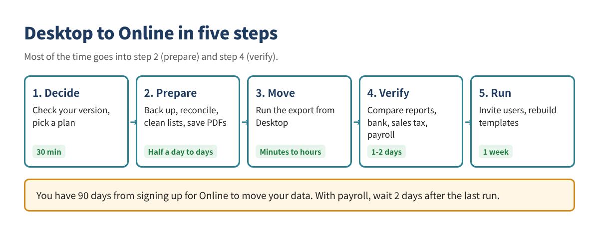
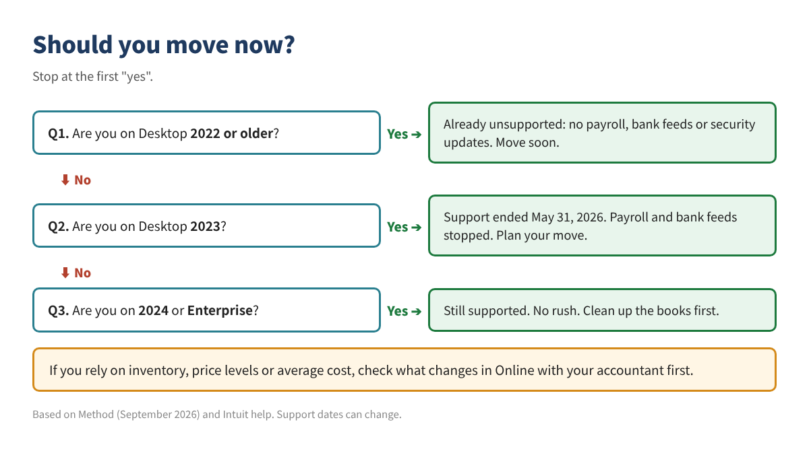
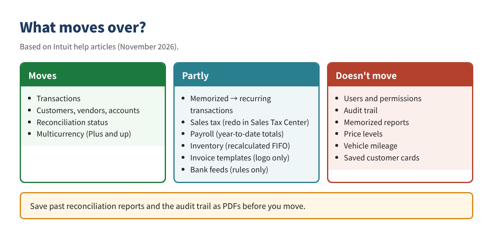

Moving from QuickBooks Desktop to Online: A Step-by-Step Guide
If you are on QuickBooks Desktop 2023 or older, payroll, bank feeds and security updates have already stopped working. The move itself takes a few hours. What decides whether it goes well is the cleanup before and the tie-out after.
This article walks through those steps in order, so you don't end up fixing an Online file whose numbers don't match.
Who this is for: owners and bookkeepers who have used Desktop for years, anyone whose payroll or bank feeds stopped at end of support, and anyone deciding whether to switch.

Two deadlines that matter most. (1) Move your Desktop data within 90 days of signing up for Online (180 days if your accountant signed up for you). (2) With payroll, move at least 2 days after your last payroll, and wait 2-3 business days after the move before running payroll in Online.
Step 1. Decide whether to move now
| Version | Status | What it means |
|---|---|---|
| 2022 or older | Unsupported | No payroll, bank feeds or security updates |
| 2023 | Support ended May 31, 2026 | Opens, but payroll and bank feeds stopped |
| 2024 | Supported (no end date announced) | No rush |
| Enterprise | Still sold and supported | No rush |

Pro Plus and Premier Plus stopped selling to new customers after September 30, 2024. Existing subscribers can still renew.
Cost comparison (list prices, before discounts, payroll and payment fees)
| Product | Price | Users |
|---|---|---|
| Desktop Pro Plus | $1,149/yr (from Feb 2026) | 1 |
| Desktop Premier Plus | $1,609/yr | 1 |
| Online Simple Start | $38/mo ($456/yr) | 1 |
| Online Essentials | $85/mo ($1,020/yr) | 3 |
| Online Plus | $140/mo ($1,680/yr) | 5 |
Online prices reflect the August 2026 increase. Check Intuit's pricing page before you sign up.
Picking a plan
- If you track inventory in QuickBooks, you need Plus or higher. Restaurants and dry cleaners that track stock in a POS often do fine with Essentials.
- If you need recurring transactions, skip Simple Start. It has no recurring templates.
- Multicurrency needs Plus or higher.
What is missing or different in Online
- There are no price levels. If you use customer-specific pricing, decide on a workaround first.
- Inventory switches to FIFO. Numbers can differ from Desktop's average cost, and IRS Form 3115 may be needed. Talk to your accountant.
- You pay monthly and need an internet connection. In return you can log in from any device and stop sending files back and forth with your accountant.
Step 2. Know what moves and what doesn't
Transactions, customers, vendors and accounts mostly move. The trouble spots are settings, templates, reports and sales tax.

Report basis: accrual reports should match, but cash-basis reports can differ. Always compare on accrual after the move.
Step 3. Clean up in Desktop first
If you move messy books, the mess moves too. It is much easier to clean up in Desktop and then move.
Back up and keep records
- ☐ Full company file backup (.QBB), with a copy on an external drive
- ☐ Save Balance Sheet, Profit & Loss, Trial Balance, A/R and A/P Aging as PDFs, all dates, accrual
- ☐ Save past reconciliation reports as PDFs (they don't move)
- ☐ Save the Audit Trail report if you need it
- ☐ Save sales tax payment history and payroll year-to-date reports
Clean the books
- ☐ Reconcile every bank and card account through the latest month
- ☐ Clear old amounts sitting in Undeposited Funds
- ☐ Close out open invoices, unpaid bills and unapplied payments
- ☐ Merge duplicate customers and vendors; make unused items and accounts inactive
- ☐ Moving to Simple Start? Delete scheduled transactions
Technical checks
- ☐ Update Desktop to the latest release (Help > Update QuickBooks Desktop)
- ☐ Make sure you can sign in as Admin in both Desktop and Online
- ☐ Press F2 or Ctrl+1 and check Total Targets is under 400,000. If not, condense the file
- ☐ For files from before 2010, run QuickBooks File Doctor first
- ☐ Confirm the Online company is set to the United States
- ☐ List the apps connected to Desktop (POS, payments)
Step 4. Moving day
You start the move from inside Desktop. Don't enter new transactions in Desktop while it runs.
- Set up Online: sign up, but don't enter transactions yet.
- Export from Desktop: in Pro or Premier, go to Company > Migrate this company file to QuickBooks Online > Export Your Company File to QuickBooks Online > Get started. In Enterprise, press Ctrl+1, then Ctrl+B+Q, click OK, then Get started.
- Sign in to Online and pick the company that receives the data.
- Choose what to move: usually all data. If old books are a mess, move lists and balances only and keep history in the Desktop file.
- Moving inventory? Pick a FIFO start date. Intuit suggests the day after your last tax filing period. Inventory transactions before it can't be edited, so decide with your accountant.
- Wait for the email that says the move is done.
Need to redo it? Fix the cause in Desktop and export again to the same Online company. That overwrites the Online data, so don't enter new transactions in Online until you have confirmed the move.
Step 5. Tie out the numbers
Don't enter new transactions or invite users until the key reports match Desktop.
- ☐ Run Balance Sheet and Profit & Loss for All Dates, Accrual and compare with your PDFs
- ☐ Compare A/R, Undeposited Funds (Payments to deposit in Online), Trial Balance and Aging
- ☐ If you moved inventory, review quantity, value and cost of goods sold with your accountant
- ☐ Fix accounts whose Detail Type became generic (for example Other Miscellaneous Income)
- ☐ Reconnect bank and card accounts, starting the day after your last reconciliation, to avoid duplicates
- ☐ Sales tax: delete the imported payments and set it up again in the Sales Tax Center
- ☐ Payroll: check employees, year-to-date totals, tax IDs and direct deposit, then run the first payroll 2-3 business days later
- ☐ Disconnect GoPayment from Desktop and reconnect it to Online
- ☐ Rebuild recurring transactions, invoice templates and the reports you use
- ☐ Invite users and your accountant and set permissions
Your Desktop file isn't deleted. Desktop 2023 R3 and later can open it read-only for a year after you cancel. Keep the backup and PDF reports for as long as you keep tax records.
Industry notes: restaurants and dry cleaners
Shops that used Desktop for years often record daily sales several different ways. Use the move to settle on one.
| Check | Restaurant | Dry cleaner |
|---|---|---|
| Daily sales | Mix of sales receipts, journal entries and deposits only? Use one daily entry from the move on | All services in one income account? Split by service |
| Card sales | Recording deposits net of fees understates sales. Record gross sales plus a fee expense | Same as restaurant |
| Tips | Move card tips to a liability account (Tips Payable) | Not applicable |
| Delivery apps | Recording payouts only leaves out the fee expense | Not applicable |
| Prepaid and house accounts | Gift card sales are a liability, not income | House account balances should match the POS |
| Sales tax | Recheck rates where food and alcohol differ | Taxability varies by state; check repairs vs cleaning |
Ask your accountant before fixing past years. Changing a year you already filed changes the numbers you reported. Usually you record the right way from the move forward and leave the past alone.
Checklist
- ☐ Check your Desktop version and support status
- ☐ Pick an Online plan (inventory, recurring, multicurrency)
- ☐ Back up (.QBB) and save key reports as PDFs
- ☐ Reconcile all accounts; clear Undeposited Funds and open items
- ☐ Check Total Targets; update Desktop
- ☐ Run the export within 90 days of signing up
- ☐ Compare reports on accrual
- ☐ Reconnect bank, sales tax, payroll and apps
- ☐ Invite users only after the numbers match
This article is educational only and is not accounting, tax or legal advice. Intuit's steps, prices and deadlines change often, so check the official help before you act. Menu names can change. QuickBooks is a registered trademark of Intuit Inc.; not affiliated with or endorsed by Intuit.
Sources (checked November 2026): Intuit, "Move your QuickBooks Desktop company file to QuickBooks Online": https://quickbooks.intuit.com/learn-support/en-us/help-article/import-export-data-files/move-quickbooks-desktop-file-quickbooks-online/L6af3Z0Fb_US_en_US · Intuit, "Learn how features and data transfer from Desktop to Online": https://quickbooks.intuit.com/learn-support/en-us/help-article/import-export-data-files/expect-switch-quickbooks-desktop-quickbooks-online/L0dEyNosU_US_en_US · Intuit, "Learn what to do after you move to QuickBooks Online": https://quickbooks.intuit.com/learn-support/en-us/help-article/convert-files/converting-quickbooks-desktop-windows-mac-online/L6QYzKBOV_US_en_US · Intuit, Desktop stop-sell: https://quickbooks.intuit.com/r/whats-new/quickbooks-desktop-stop-sell/ · Method, QuickBooks Desktop discontinued: https://www.method.me/blog/quickbooks-desktop-discontinued/ · AuditFriendly, QuickBooks Online 2026 price increase: https://auditfriendly.co/answers/quickbooks-online-price-increase-2026